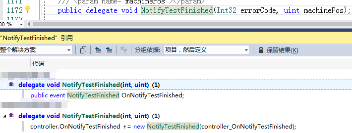

《Introducing Visual C# 2010》（Adam Freeman著，Apress出版）一书的第10章中有这样的介绍：
Delegates are special types thatencapsulate a method, similar to function pointers found in other programminglanguages. Delegates have a number of uses in C#, but you are most likely toencounter a special type of delegate—the event. Events make notifyinginterested parties simple and flexible, and I’ll explain the convention fortheir use later in the chapter.
委托是封装方法的特殊类型，它类似于其它编程语言中的函数指针。委托在C#中有大量运用，但你最可能遇到的是一种特殊的委托类型— 事件。事件使得对相关部件的通知变得简单而灵活，本章后面将解释其使用约定。
I’ll also explain the Func and Action typesthat let you use delegates in a more convenient form and that are usedextensively in some of the latest C# language features, such as parallelprogramming. We’ll finish up this chapter with a look at anonymous methods andlambda expressions, two C# features that let us implement delegates withouthaving to define methods in our classes.
我也会解释Func和Action类型，它们让你以更方便的形式使用委托，而且在一些最新的C#特性中也有广泛使用，如并行编程。本章最后考察匿名方法和lambda表达式，这是让我们不必在类中定义方法就可以使用委托的两个C#特性。
委托：
实现步骤：
1、声明一个委托类型：
public delegate int CalculateDelegate(int x, int y);2、定义一个委托对象：
CalculateDelegate calculateDelegate = new CalculateDelegate(Add);其中Add是委托封装的方法；
3、执行委托方法：
calculateDelegate(2, 3);其中委托绑定的方法Add：
public static int Add(int x, int y)
{ return x + y;}
事件：
事件是一种特殊类型的委托
拿winform中button双击举例说明委托可能更加贴切：
声明一个委托，并声明一个事件：
public delegate void EventHandler(object sender, EventArgs e);
public event EventHandler Click;绑定一个事件：
this.button1.Click += new System.EventHandler(this.button1_Click);this.button1_Click是一个方法：
private void button1_Click(object sender, EventArgs e){}
拿一个实际项目举例说明：

匿名方法：
匿名方法（Anonymous methods） 提供了一种传递代码块作为委托参数的技术。匿名方法是没有名称只有主体的方法。在匿名方法中您不需要指定返回类型，它是从方法主体内的 return 语句推断的。
在之前讲解委托时写到绑定方法：
CalculateDelegate calculateDelegate = new CalculateDelegate(Add);
public static int Add(int x, int y)
{
return x + y;
}如果使用匿名方法重写上面的代码：
CalculateDelegate calculateDelegate = delegate(int x, int y){return x + y;};可见：匿名方法绑定委托直接省去了编写一个单独的方法，使得代码更为简洁。
项目中，使用委托时，很多时候编辑器会帮助我们把方法直接放入合适的委托对象中，但有时候编辑器帮助不了我们，比如：Control.Dispatcher.Invoke(delegate). 例如：
this.btnExit .Dispatcher .Invoke (new Action(() => {}));
Lambda表达式：
Lambda 表达式是一种匿名函数，简单地说，它是没有声明的方法，也即没有访问修饰符、返回值声明和名字;
C#的Lambda 表达式都使用 Lambda 运算符 =>，该运算符读为“goes to”。语法如下：
(object argOne, object argTwo) => {; /*Your statement goes here*/}用Lambda表达式重写上面使用匿名方法编写的委托实例，在匿名方法的基础上，编写如下：
方式一：
CalculateDelegate calculateDelegate = (int x, int y) => { return x + y; };方式二，更简单的表达：
CalculateDelegate calculateDelegate = (x, y) => { return x + y; };方式三，再简单：
CalculateDelegate calculateDelegate = (x, y) => x + y;从上面可以看出，Lambda仅仅是在匿名方法的基础上加上 => 符号，但是却让整个代码实现起来显得更为优雅。
泛型委托：
在.net平台下有Microsoft自带的泛型委托，如：Action,Action<T>,Fun<T>等。实际使用中，如果需要用到泛型委托，系统内置的委托基本上就能满足需求了，下面一一介绍它们的原型及调用实例。
Action
系统封装的Action委托，没有参数没有返回值。调用实例为：
public delegate void Action();
static void Main(string[] args)
{
Action action = new Action(Method);
action();
}
private static void Method()
{
Console.WriteLine("i am is a action");
}如果方法的表达很简单，可以使用Lambda表达式，代码如下：
Action action = () => { Console.WriteLine("i am is a action"); };
Action<T>
系统封装的Action<T>委托，有参数但是没有返回值。调用实例为：
public delegate void Action<in T1, in T2>(T1 arg1, T2 arg2);
static void Main(string[] args)
{
Action<int,int> action = new Action<int,int>(Method);
action(2,3);
}
private static void Method(int x,int y)
{
Console.WriteLine("i am is a action");
}
使用Lambda表达式编写Action<T>代码如下：
Action<int, int> action = (x, y) => { Console.WriteLine("i am is a action"); };
Fun<T>
系统封装的Fun<T>委托，有返回值。调用实例为：
public delegate TResult Fun<in T1, in T2, out TResult>(T1 arg1, T2 arg2);
static void Main(string[] args)
{
Fun<int, int, bool> fun = new Fun<int, int, bool>(Method);
bool ret = fun(2,3);
}
private static bool Method(int x,int y)
{
if (x + y == 5) return true;
else return false;
}
使用Lambda表达式编写Fun<T>，代码如下：
Fun<int, int, bool> fun = (x, y) =>
{
if (x + y == 5) return true;
else return false;
};
Fun<T>没有参数有返回值的情况：
Fun<bool> fun = () =>
{
int x = 4;
int y = 3;
if (x + y == 5) return true;
else return false;
}; //也可以如此编写Fun<bool> fun = () => false;
多播委托：
最后说下多播委托，所谓多播委托，即 “多路广播委托”（MulticastDelegate）。从它的名字就可以看出，此种委托可以像广播一样将影响信息“传播”到四面八方。多播委托类拥有一个方法调用列表，调用委托时，它就会逐一调用该列表中的方法，从而实现多重影响。比较简单，暂不举例说明了。
本文暂且告一段落，如果想查看更多文章，请关注“小项目笔记”公众号；
如有疑问：可加入QQ群号：732982683